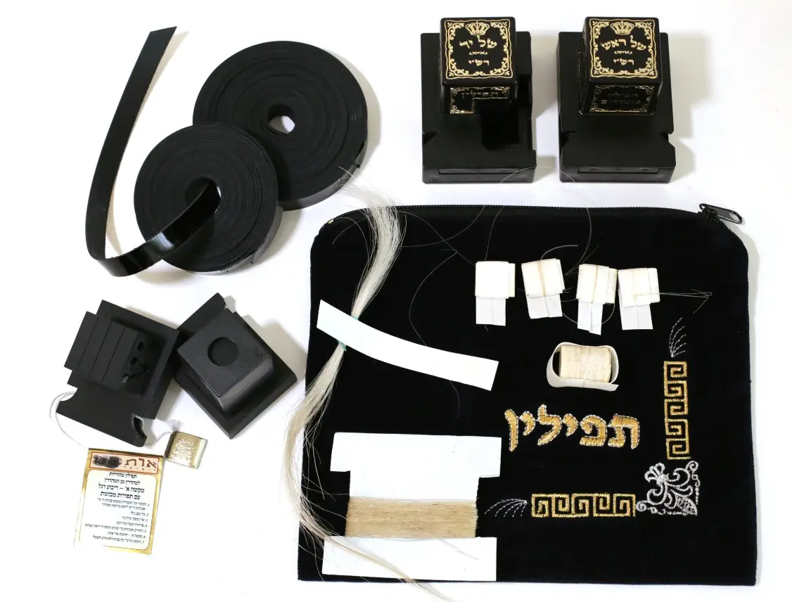

קניית תפילין מהודרות · המאמר האחרון בסדרה
הרצועות והקשירה: הכול תלוי בקשר

הגענו למאמר האחרון בסדרה על קניית תפילין מהודרות. לאחר הפרשיות, הבתים והכנסת הפרשיות, נשאר החלק שנמצא מול עינינו בכל יום — הרצועות והקשרים.
הן אולי נראות כמו סיום פשוט של הכנת התפילין, אבל רצועות טובות וקשר מקצועי משפיעים על הכשרות, על הנוחות ועל עמידות התפילין לאורך שנים.
לפעמים הזול נקשר אלינו ביוקר
הרצועות מתבלות בדרך כלל הרבה לפני הבתים והפרשיות. ברצועות זולות עלולים להופיע סדקים, קילופים ואיבוד צבע, ולכן ההשקעה ברצועות איכותיות אינה מותרות אלא חיסכון בהחלפה מוקדמת ובתיקונים.
ברצועות מהודרות כדאי לבחור עור עליון, שנעשה בעבודת יד ובכשרות טובה ומוכרת. לנוהגים כדעת הרמב״ם ורבנו האר״י מקפידים שהרצועות יהיו שחורות משני הצדדים.
קשר טוב מתחיל במי שקושר
גם קשירת הרצועות היא חלק מהכנת התפילין. הקושר צריך להיות ירא שמים ובקי במלאכה, ולהכין את הקשרים לפי מנהג הקונה. את רצועת הימין של תפילין של ראש משאירים ארוכה מעט מרצועת השמאל.
היו״ד הקטנה שמגלה את איכות העבודה
בקשר של יד יש להקפיד שצורת היו״ד תהיה ברורה ושגודלה יהיה לפחות סנטימטר. בקשר האשכנזי חשוב שהלולאה לא תהיה רחבה מדי, כדי שהיו״ד תישאר צמודה לבית. גם קופסת התפילין צריכה להתאים ולא לדחוק את הקשר.
סימן ישר שמונע בלבול
בתפילין של רבנו תם כדאי לסמן בבירור את הרצועות או את הקופסאות, כדי למנוע החלפה. לאיטר יד נדרש קשר של יד המותאם לצד הנכון, ובקשר של ראש חשוב להתאים את המידה לראשו של המניח.
סוף הסדרה — לא סוף הבדיקה
פרשיות טובות, בתים איכותיים וסגירה מקצועית זקוקים גם לרצועות ולקשרים הראויים להם. בקניית תפילין, המכלול הוא שקובע.
כי בתפילין, כמו בחיים: אפשר להשקיע בכל החלקים — ובסוף הכול תלוי בקשר.
הרב יוחאי אוחיון — מומחה בהוראת הכתב הספרדי
ראש מכון אמנות הסת״ם